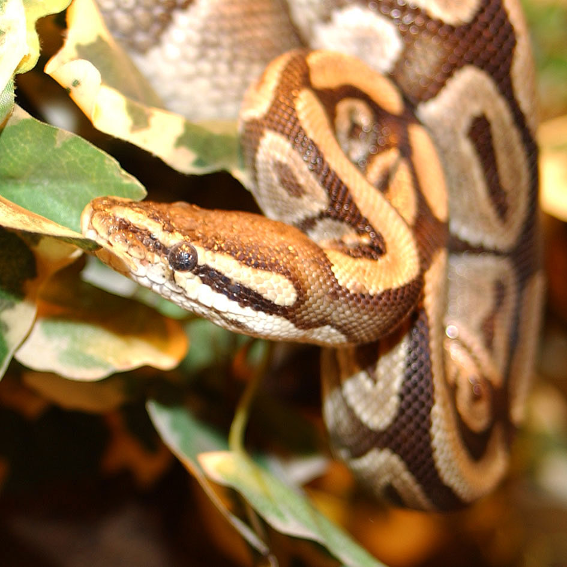

Описание Питона

Размеры питонов колеблются от 1,5 (королевский питон) до 5–10 м
Окраска очень разнообразная
У питонов сохранились рудименты тазового пояса и задних конечностей
Более подробное описание тут